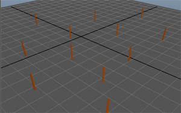
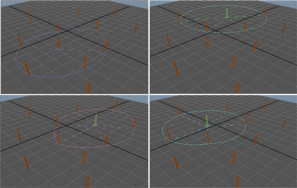
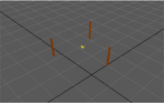
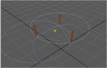
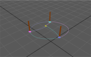

XGen 插值是一个非常有用的概念，在将导向插值与描述一起使用时应该了解该概念。本部分提供了有关使用导向以及 XGen 如何使用插值算法计算基本体位置和形状的附加信息。
如果使用样条线基本体，可以使每个导向具有不同的 CV 数。还可以从导向删除 CV 或将其重建为较大的数。根据需要增减导向数。
以下图像表示导向位置的集合：
XGen 从该面的四个角点开始，评估哪条导向最近。如果所有导向相似，则该面无需特别关注，不需要进行任何其他操作。如果四个导向中任一导向不同，该长方体分为四个，并重复该评估。将长方体分割、再分割，直到根据局部导向的密度，XGen 达到足够的“分辨率”。最后四个点找到的导向值决定了相邻导向。任何不同的两个点都是相邻点，因为它们等同于分隔这些导向区域的 Voronoi 边的不同边。
一旦确定了相邻导向，XGen 就可以定义每个导向周围的导向影响区域，方法是从一条导向向相邻导向构建扫描，并插值计算两个导向之间的间距。这些距离构成了导向周围导向影响范围的半径。请注意，这不是导向的三角剖分。使用此方法不会获得连接两条导向的边，这样只有两条导向控制基本体的形状。相反，区域会沿相同区域重叠，使相邻导向沿该边界平滑融合。
以下图像显示了在我们的例子中找到的一些导向影响范围的示例。
随每个导向存储的导向影响范围信息是扫描角度和半径的组合，在 Maya 中显示为单字符串属性，您可以在 XGen 集文件中查看该属性。您无法编辑导向影响范围，但是可以添加导向，直到取得理想效果。
此处的这些插图显示了 XGen 是如何确认每个导向控制的区域的；类似于在导向周围，定义了一个虚拟的围栏，围栏将环绕它的导向连接起来。
例如，假设您要在图像中的黄色“x”给定的位置生成一个基本体。
 XGen 计算包含基本体的导向的影响范围形状，从而确定要使用的导向。它使用优化技术，消除这些导向中的大多数，只集中处理重要的导向。XGen 还可以根据曲率（也就是找到位于模型错误的一侧的导向）以及区域贴图消除导向。在此示例中，XGen 确定红色、蓝色和绿色导向必须保持活动状态。
通过从穿过基本体的导向形成的射线与导向影响范围相交，XGen 可以确定这些导向的权重。此图像显示为该基本体计算的权重。
请注意，XGen 使用到边界的距离作为该导向的权重，因此离导向的影响范围边界越近，该导向的权重越低。相反，离导向的影响范围边界越远，该导向的权重越高。
计算了所有导向的权重之后，对权重进行归一化，以使其可以用于计算基本体形状。
XGen 确定活动导向之后，就可以对它们进行插值计算。每个活动导向都转换为基本体的位置。如有必要，XGen 将每个导向重建为相同数量的 CV（例如，样条线基本体）。对于每个 CV，XGen 使用导向的加权平均，这些导向使用之前计算的权重。
此过程称为相对插值。相对插值适用于毛发、草地和类似物体，即使它们的导向放置非常稀疏。相对插值还可以用于导向数稍多的头发。请注意，要得到理想效果，在头部模型上只使用 10 个导向是不够的。相对插值方法要求导向之间的曲面曲率很小。
一个小实验有助于找到有效的导向密度。此密度可能高于您在 XGen 先前版本中使用的密度，但是结果更加直观，容易预测。
修饰毛发时，有时插值过于精确，反而无法获得平滑的外观，因为 XGen 与导向完全匹配。有时即使添加更多导向，还是会出现这种情况，尽管添加导向是个好办法，但是对于毛发，您不需要只为了更平滑的外观就管理大量的导向。如果是这种情况，请使用“融合”(Blend)属性。“融合”(Blend)属性可以放大导向的影响范围，使它们与相邻导向融合。
如果选择一个导向集合，将他们的所有融合值设置为大于 0 的值，它们将与相邻导向融合，使区域平滑。将为每个导向执行此属性，这样您可以设置一个在元素中比较理想的值。例如，您可以将面中的“融合”(Blend)属性设置为 0.2，以保持一定的清晰度，同时将其他位置的属性设置为 0.8 以使外观柔和。然后选择面和实体之间的区域，将值设置为 0.5 以平滑过渡区域。
XGen 提供了实现导向影响范围可视化的工具。在预览/渲染/导出后，XGen 会在 ${DESC} 文件夹中创建一个 connectivity.xgc 文件，其中包含该描述的所有连接信息。虽然 XGen 内部不使用任何连接性/相邻信息，但是此信息有助于进行模拟以及调试和实现可视化。
单击“导向 > 显示导向影响范围”(Guide > Display Guide Range-of-Influence)，可以使用该文件绘制该导向的影响范围以及连接性，每个导向使用同一颜色。默认情况下，将显示描述的完整连接性，但是可以根据需要选择导向，从而限制显示范围。